2.6 OpenCompass 评测 InternLM-1.8B 实践
一、任务说明
1.基础任务
使用 OpenCompass 评测 internlm2-chat-1.8b 模型在 ceval 数据集上的性能，记录复现过程并截图。
2.进阶任务
- 使用 OpenCompass 进行主观评测（选做）
- 使用 OpenCompass 评测 InternLM2-Chat-1.8B 模型使用 LMDeploy部署后在 ceval 数据集上的性能（选做）
- 使用 OpenCompass 进行调用API评测（优秀学员必做）
二、任务提交
基础任务
- 命令行参数法
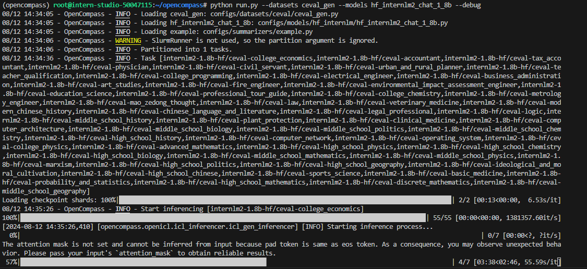
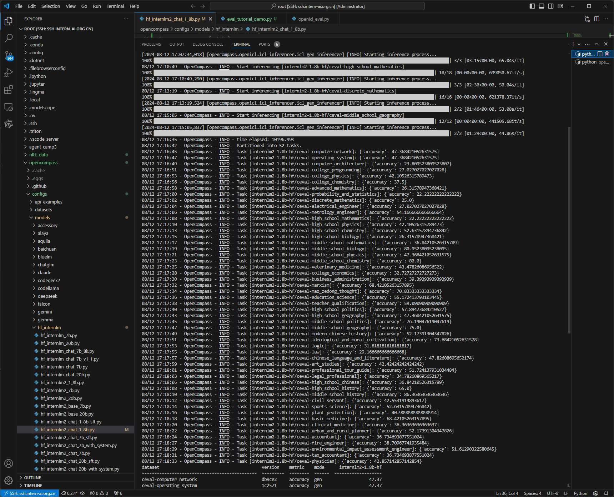
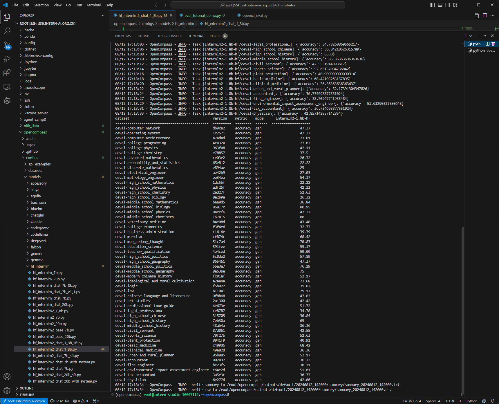
- 配置文件参数法 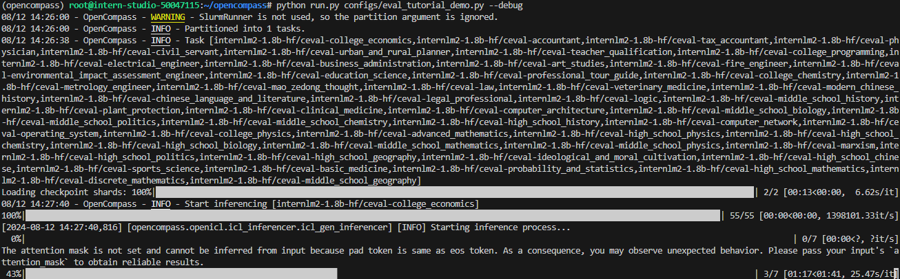
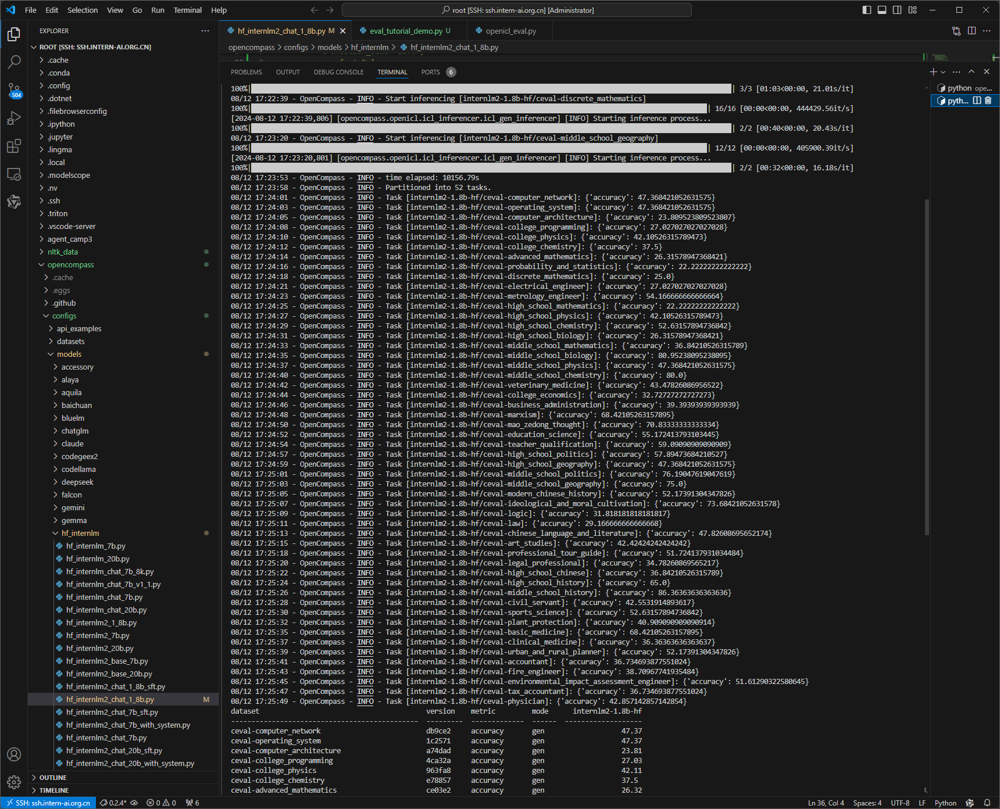
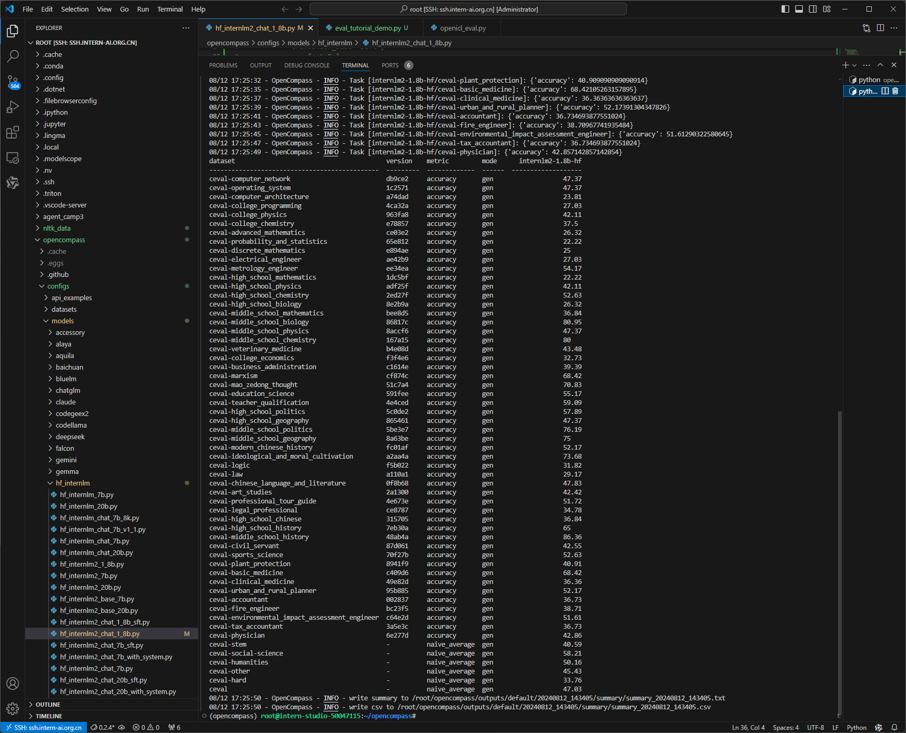
进阶任务
三、复现步骤
在 OpenCompass 中评估一个模型通常包括以下几个阶段：配置 -> 推理 -> 评估 -> 可视化。
- 配置：这是整个工作流的起点。您需要配置整个评估过程，选择要评估的模型和数据集。此外，还可以选择评估策略、计算后端等，并定义显示结果的方式。
- 推理与评估：在这个阶段，OpenCompass 将会开始对模型和数据集进行并行推理和评估。推理阶段主要是让模型从数据集产生输出，而评估阶段则是衡量这些输出与标准答案的匹配程度。这两个过程会被拆分为多个同时运行的“任务”以提高效率，但请注意，如果计算资源有限，这种策略可能会使评测变得更慢。如果需要了解该问题及解决方案，可以参考 FAQ: 效率。
- 可视化：评估完成后，OpenCompass 将结果整理成易读的表格，并将其保存为 CSV 和 TXT 文件。你也可以激活飞书状态上报功能，此后可以在飞书客户端中及时获得评测状态报告。 接下来，我们将展示 OpenCompass 的基础用法，展示书生浦语在 C-Eval 基准任务上的评估。它们的配置文件可以在 configs/eval_demo.py 中找到。
3.1 环境配置
3.1.1 开发机创建
在创建开发机界面选择镜像为 Cuda11.7-conda，并选择 GPU 为10% A100。
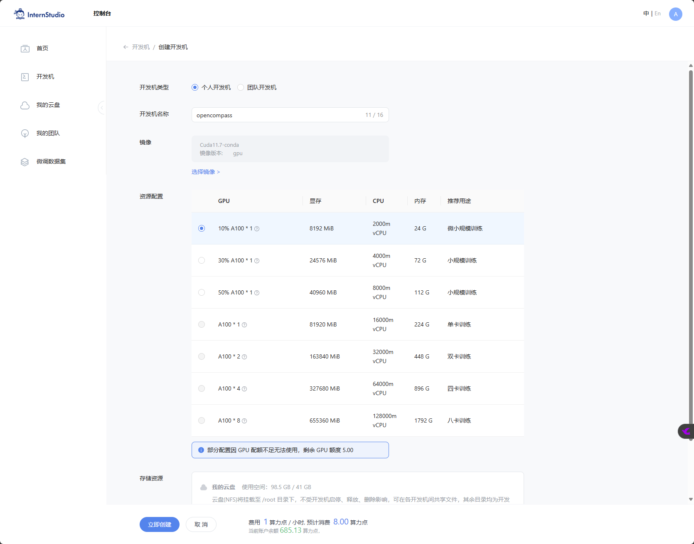
3.1.2 conda环境、源码及依赖安装
conda create -n opencompass python=3.10
conda activate opencompass
conda install pytorch==2.1.2 torchvision==0.16.2 torchaudio==2.1.2 pytorch-cuda=12.1 -c pytorch -c nvidia -y
# 注意：一定要先 cd /root
cd /root
git clone -b 0.2.4 https://github.com/open-compass/opencompass
cd opencompass
pip install -e .
apt-get update
apt-get install cmake
pip install -r requirements.txt
pip install protobuf
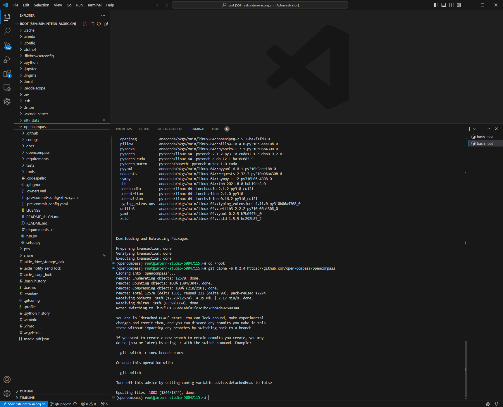
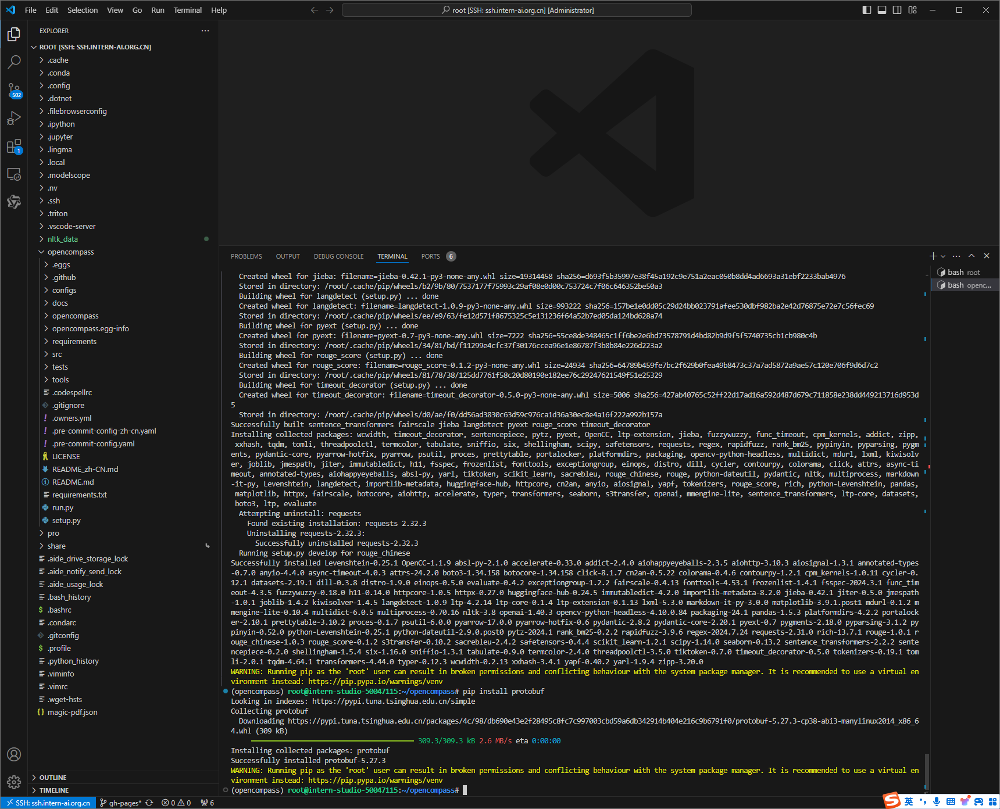
3.2 数据
- 拷贝解压开发机提供的数据
cp /share/temp/datasets/OpenCompassData-core-20231110.zip /root/opencompass/
unzip OpenCompassData-core-20231110.zip
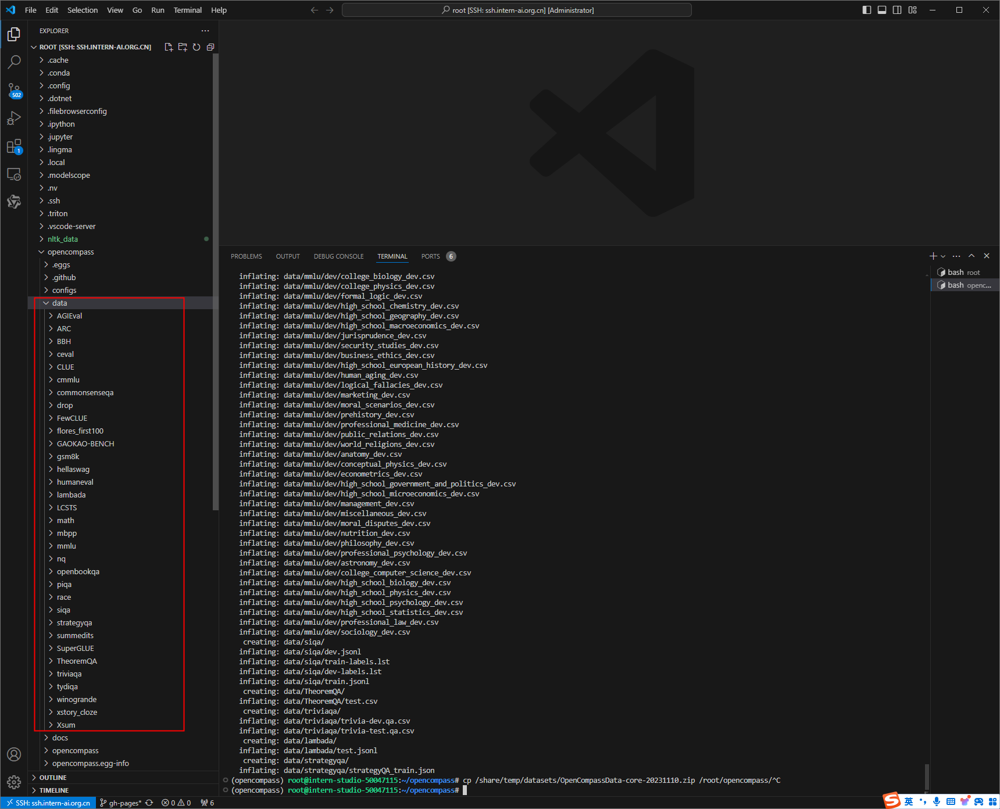
- 查看支持的数据集和模型
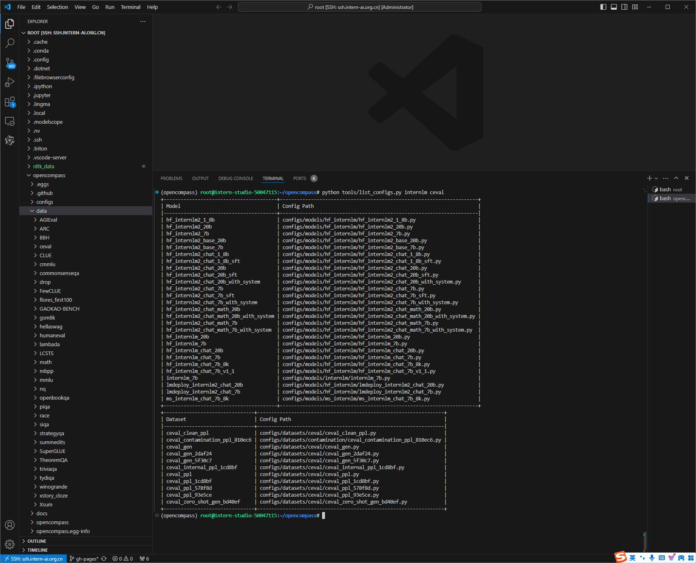
3.3 启动测评
3.3.1 使用命令行配置参数法进行评测
- 打开 opencompass文件夹下configs/models/hf_internlm/的hf_internlm2_chat_1_8b.py ,贴入以下代码
from opencompass.models import HuggingFaceCausalLM
models = [
dict(
type=HuggingFaceCausalLM,
abbr='internlm2-1.8b-hf',
path="/share/new_models/Shanghai_AI_Laboratory/internlm2-chat-1_8b",
tokenizer_path='/share/new_models/Shanghai_AI_Laboratory/internlm2-chat-1_8b',
model_kwargs=dict(
trust_remote_code=True,
device_map='auto',
),
tokenizer_kwargs=dict(
padding_side='left',
truncation_side='left',
use_fast=False,
trust_remote_code=True,
),
max_out_len=100,
min_out_len=1,
max_seq_len=2048,
batch_size=8,
run_cfg=dict(num_gpus=1, num_procs=1),
)
]
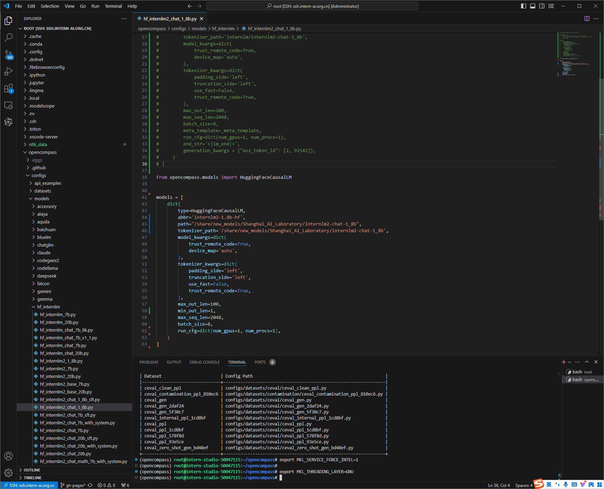
- 运行评测
- 命令解析
3.3.2 使用配置文件改参数法进行评测
除了通过命令行配置实验外，OpenCompass 还允许用户在配置文件中编写实验的完整配置，并通过 run.py 直接运行它。配置文件是以 Python 格式组织的，并且必须包括 datasets 和 models 字段。本次测试配置在 configs文件夹 中。此配置通过 继承机制 引入所需的数据集和模型配置，并以所需格式组合 datasets 和 models 字段。 运行以下代码，在configs文件夹下创建eval_tutorial_demo.py
from mmengine.config import read_base
with read_base():
from .datasets.ceval.ceval_gen import ceval_datasets
from .models.hf_internlm.hf_internlm2_chat_1_8b import models as hf_internlm2_chat_1_8b_models
datasets = ceval_datasets
models = hf_internlm2_chat_1_8b_models
3.4 测评结果
- 命令行参数法
- 配置文件参数法